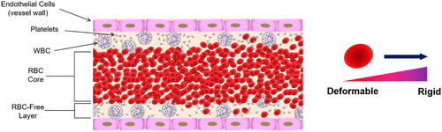

blood 는 다음 4가지로 구성 되어 있다.
Components of Blood
-Red blood cells
-White blood cells
-Platelets
-Extracellular fluid(Plasma)
여기서,
viscosity
을 결정하는 요소는 바로
Red blood cells들의 함유량
으로 결정된다.
Hematocrit - 적혈구함유량

적혈구는 위의 사진처럼, 혈액의 흐름에서
고체 입자처럼(탄성력을 가지고 있음)
act하기 때문에,
따라서,
1. Hematocrit 높아질수록, 혈액의 Viscosity가 높아진다.
일반적으로, 37°C
에서
측정한 혈액의 평균 점성은
3~4cP(mPa s)
(
물의 점성
은 같은 온도에서 약
1 cP
(mPa·s))
위의 사실이 가장 중요한 사실이다.
두번째로 중요한 사실은,
2.혈액은 Non-newtonian Fluid 성질을 띈다.

Fluid mechanics part 에서 다루었다 싶이.(밑에 링크 참고)
https://jeffdissel.tistory.com/42
Shear rate가 변할때 마다,
shear stress도 linear 하게 변하는 것이 바로
뉴턴 유체이다.
반대로, nonlinear 하게 변하는 것이 비뉴턴 유체.

Non-newtonian Cannon model
위 그래프는 실제 실험 데이터를 가지고,
Cannon이라는 사람이 만든
비뉴턴 혈액 점성 모델이다.
위 그래프를 살펴보면, 2가지 사실 을 알 수 있다.
1.shear rate가 굉장히 낮을때, 급격하게 shear stress가 증가한다.
(기울기 큼 = 점성 큼)
즉, 굉장히 낮은 속도로 혈액이 흐를때는
점성이 굉장히 크다는 것을 알 수 있다.
2. Shear rate가 증가하면, shear thinning 즉, 점성이 감소하다가.
Newtonian Fluid 처럼 Linear한 형상을 띄는 것을 알 수 있다.
따라서, 빠른 속도로 흐르는 혈액의 경우에는
점성이 작아지며 비교적 일정해짐을 확인 할 수 있다.
굉장히 낮은 속도로 혈액이 흐를때(압력이 낮을때)
는 보통 혈관이 작은 경우다.

이 경우,
지나가는 혈관과 적혈구의 크기가 비슷하여,
마찰의 작용으로, 굉장히 점성이 증가한다.
(적혈구는 탄성력이 있음)
그렇다면, 혈관의 크기가 큰 경우는?
밑의 사진처럼, platelets(혈소판)들이 벽쪽과 가깝고
적혈구들은 혈관의 middle에서 흐르게 된다.
따라서, 적혈구와 벽과의 마찰이 줄어 들게 되어,
낮은 점성과 높은 혈류속도로 전달 할 수 있게 된다.

(가장 효율적으로 혈류공급을 하는 방법을 선택한 것이다)
신기함..
하지만, 정확하고 구체적으로
define 된 점성 모델이 존재하지 않는다.
적혈구의 양,
혈관의 크기,
혈관의 위치,
등등에 따라서
점성이 굉장히 달라지기 때문에.
그럼에도, cannon model 에서 알 수 있듯이,
(보통, 큰 artery에서 분석할때는
뉴턴유체 가정 성립)
그럼에도,
Non-Newtonian model
가장 흔하게 쓰이는 모델이 바로,
Casson model
이며, 다음 그래프 모습을 띈다.
그 외에도, 다양한 방정식들이 제시되어 왔고,
이 식들은 모두 실험식이다
실험을 통해서 데이터들을 추출 한 후에
그 데이터에 fitting하는 식을 세우고, 모델로 define 한 것이다.

결론적으로!
비뉴턴 모델들을 그래프로 도식화 시키면
- Strain rate가 커지면, 뉴턴유체의 성질을 띄는 것을 알 수 있고.
- strain rate가 굉장히 작은 (작은 혈관)의 경우 실험데이터들이 제각각이지만,
점성이 커짐을 확인 할 수 있다.